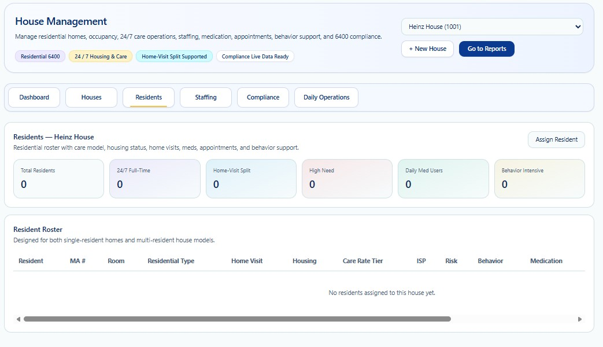

HOUSE MANAGEMENT • RESIDENT ASSIGNMENT
Residents
Review and manage resident placement, rooming, housing type, support intensity, ISP, risk, behavior, and medication readiness.
House Management may display PHI, residential addresses, staffing assignments, medication-related readiness, behavior-support information, compliance findings, and operational alerts. Screenshots in this public guide use redacted or demonstration information. Certain residential controls, validation rules, staffing logic, corrective-action workflows, security controls, and Provider configuration are intentionally summarized and are trained directly for authorized Provider customers.
This documentation describes a True Care System workflow designed to support Pennsylvania Chapter 6400-style residential operations. It is not legal advice and does not replace the Provider's responsibility to follow current licensing requirements, individual plans, payer rules, fire-safety requirements, staffing plans, medication requirements, and any state-specific standards that apply to each home.
Purpose
The Residents workspace connects Individuals to the selected house and helps authorized teams review census, residential type, room assignment, home-visit arrangements, care intensity, ISP considerations, risk, behavior support, medication support, and assignment status.

Resident Roster
Identity, MA number, room, residential type, home-visit status, housing, care-rate tier, ISP, risk, behavior, and medication indicators support placement review and operational readiness. These indicators do not replace the source ISP, clinical, medication, or behavior-support records.